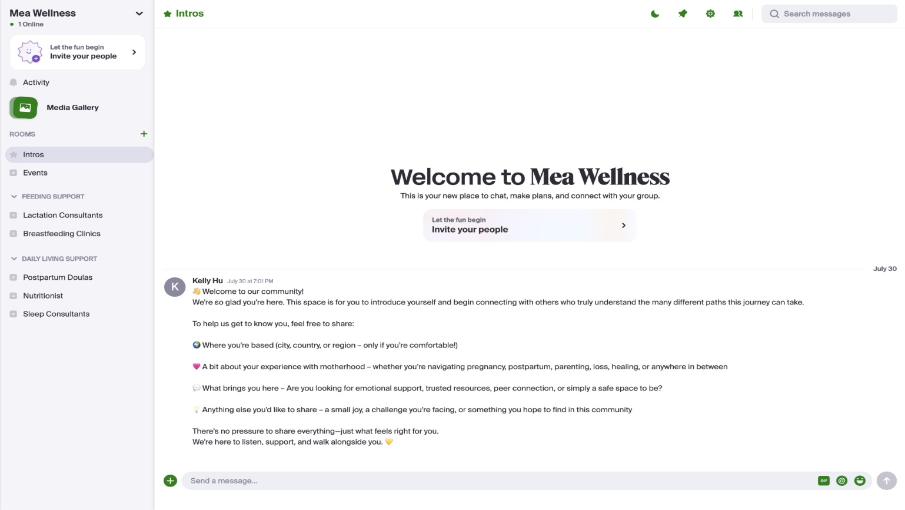
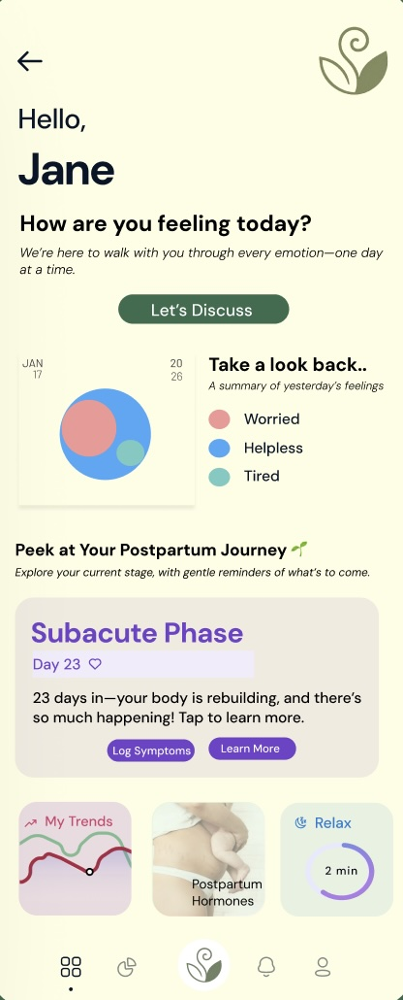

Co-founder & Product Lead · University of Waterloo Velocity Summer Incubator
Postpartum mental health support is fragmented: therapy has a waitlist, peer support lives in scattered Facebook groups, and nobody's tracking how a parent is actually doing day to day. Mea (formerly Hera) brings community, emotional tracking, and education into one platform built around how postpartum parents actually move through their day.
The problem
New parents are handed a mental health screening at their six-week checkup and then largely left to figure out the rest on their own. Therapy access is slow and expensive, peer support lives in unmoderated Facebook groups, and there's no consistent way to track how someone is actually doing between appointments. The maternal mental health market reflects the scale of the gap: valued at $6.2B globally in 2022, projected to reach $45.7B by 2030, with the digital slice alone growing from $2.59B to $9.53B over the same period.
The solution
Mea is built around daily emotion tracking and journaling so patterns become visible over time, virtual sessions with clinicians for when professional support is needed, and a peer community and resource hub for the day-to-day moments that don't require a therapist, just someone who's been there.
Product
The dashboard view supports the clinician-facing side of the platform. The phone view is the daily tracking flow parents actually touch every day..


Validation
Before writing a line of product code, we validated the concept through 20+ interviews with moms, therapists, doulas, and care providers. We ran our first pilot as a WhatsApp-based community with weekly expert-led sessions — cheap to test, fast to iterate, and it told us exactly which parts of the experience people actually showed up for before we built anything permanent.
Business model
| Phase | Model |
|---|---|
| Phase 1 | Freemium plus mission-aligned grants, to keep the barrier to entry low |
| Phase 2 | Clinician and partnership model for recurring revenue |
| Phase 3 | Employer and insurer coverage, to scale access further |
Recognition
Mea was selected for Velocity's Summer Incubator, receiving venture funding, mentorship, and dedicated product development support to move from pilot to platform.
My role
As Product & Experience Lead, I shaped the three-pillar structure from our stakeholder interviews, led the customer discovery that validated the roadmap, and worked with our Research, Design, and Technical leads to translate the WhatsApp pilot's lessons into the beta platform.
Full documentation
The full deck covers market sizing, the competitive landscape, and our go-to-market plan in more detail.